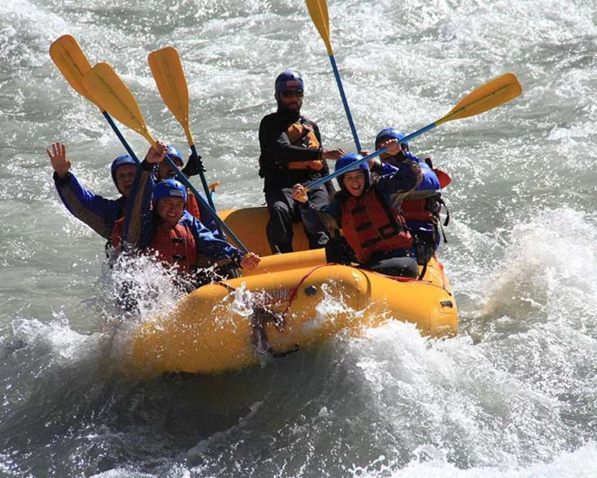
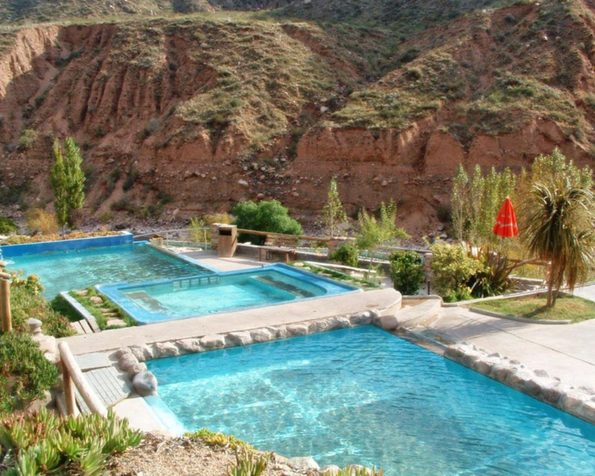
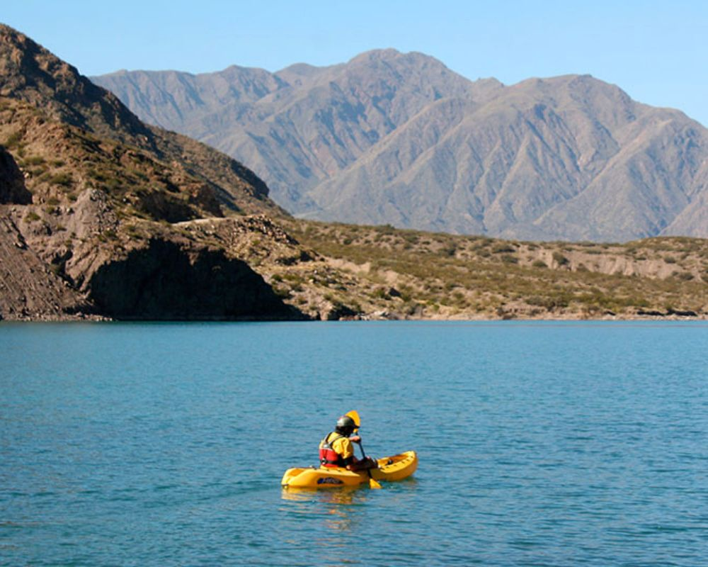

Disfruta de Aguas Rapidas, Termales y Tranquilas con increibles paisajes.
Disfruta de la adrenalina descendiendo por los rápidos del Río Mendoza.
Relájate en piscinas termales naturales enclavadas en la montaña.
Navega las tranquilas aguas del embalse rodeado de montañas, ideal para quienes buscan una experiencia relajante.
